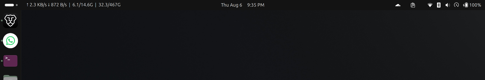
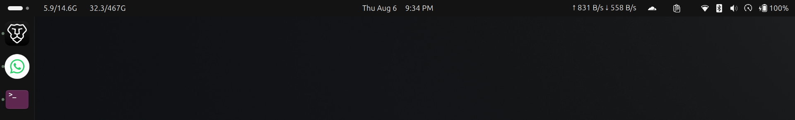
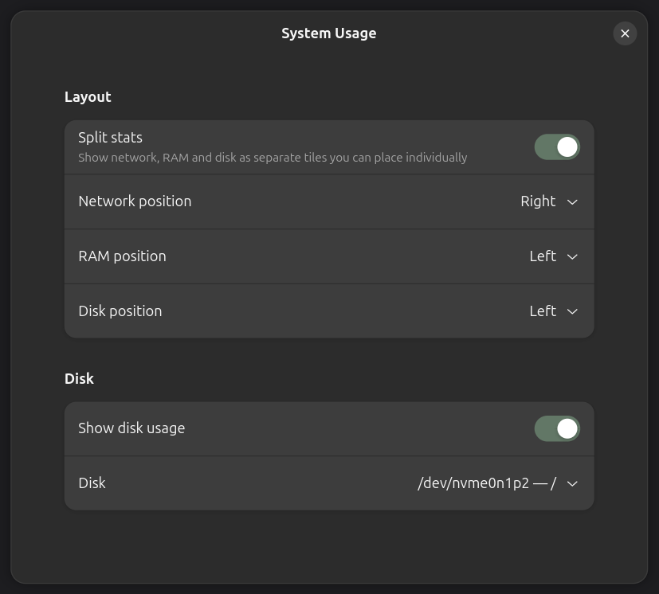

Why
Most panel monitors sum every interface in /proc/net/dev. With a
VPN or Docker running, the same bytes are counted on the tunnel and again on
the physical NIC, so a real 2.5 MB/s reads as about 6 MB/s.
This one counts only interfaces backed by hardware, the ones with a
/sys/class/net/<if>/device link.
Settings
Left, center or right for the whole set, or per tile once split. Disk usage is optional and reads any mounted filesystem you pick.

Install
Requires GNOME Shell 50.
git clone https://github.com/legitcoconut/gnome-system-stats
ln -s "$PWD/gnome-system-stats" \
~/.local/share/gnome-shell/extensions/system-usage@legitcoconut
glib-compile-schemas \
~/.local/share/gnome-shell/extensions/system-usage@legitcoconut/schemas
gnome-extensions enable system-usage@legitcoconutLog out and back in on Wayland, or Alt+F2 then r on X11.